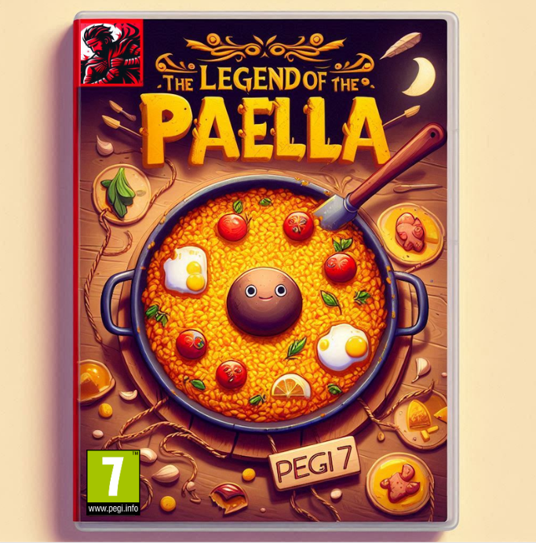
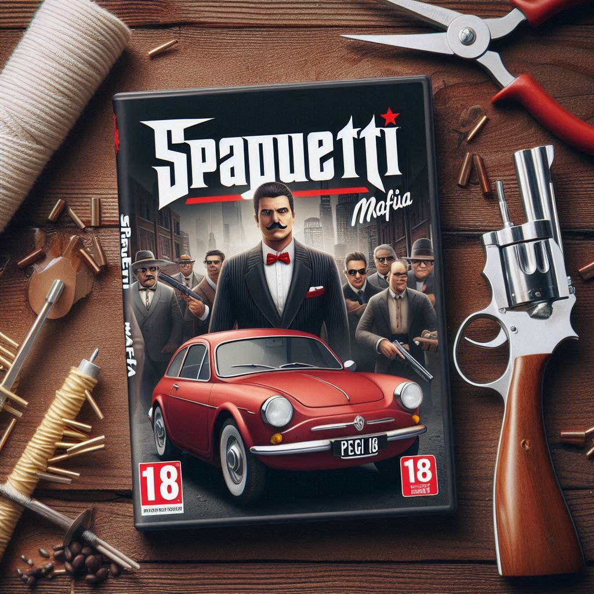
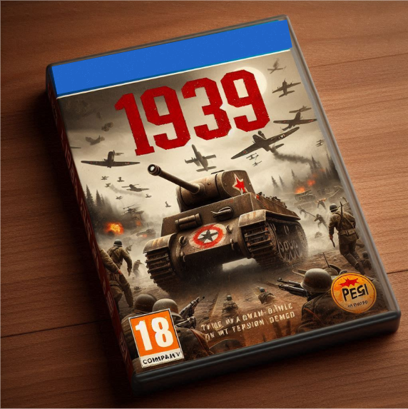
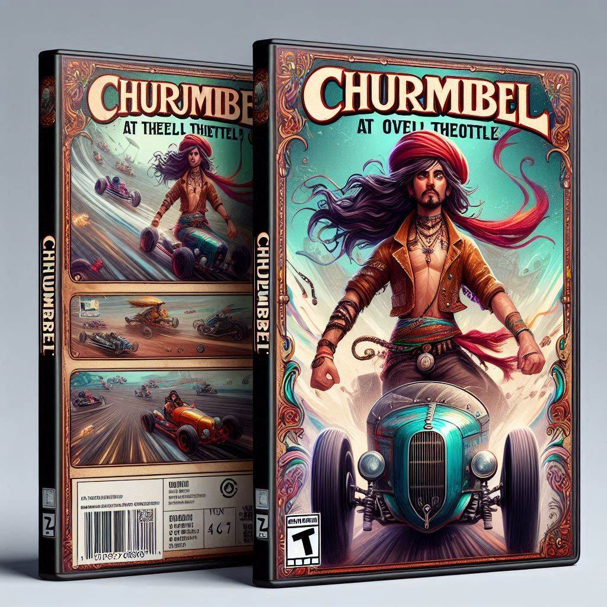
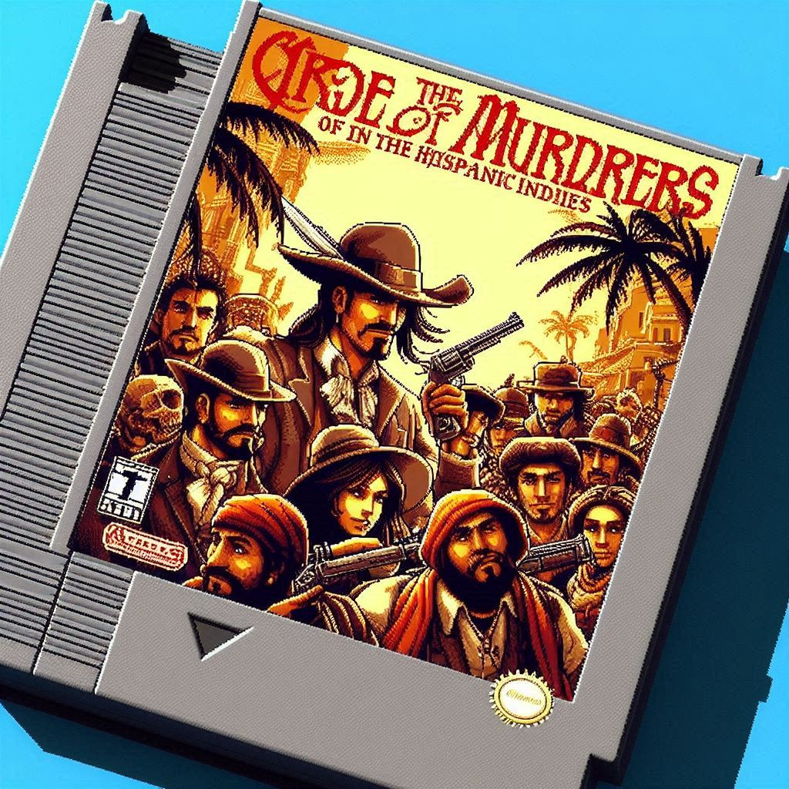

| The Legend of Paella |  |
DescripciónThe Legend of Paella es un videojuego de aventura y cocina que nos sumerge en una experiencia vibrante e inspirada en la cultura española. Los jugadores asumen el papel de un joven chef que recorre diversos pueblos, desafiando a cocineros locales y buscando ingredientes únicos para crear la paella perfecta. |
| Spaguetti Mafia |  |
DescripciónSpaghetti Mafia es un videojuego de acción y estrategia ambientado en una versión estilizada y humorística de la Italia de la década de 1950. Los jugadores asumen el rol de un joven mafioso que debe abrirse paso en el mundo del crimen organizado. |
| 1939 |  |
Descripción1939 es un intenso videojuego de guerra y estrategia que transporta a los jugadores al comienzo de la Segunda Guerra Mundial, ofreciendo una experiencia de combate realista y envolvente. |
| Churimbel |  |
DescripciónChurmibel es un emocionante juego de carreras que trae velocidad, caos y diversión en cada circuito. Los jugadores asumen el rol de Churmibel, un piloto carismático con habilidades únicas. |
| Creed of the Murders: The Hispanic Indies |  |
DescripciónEl Credo de los Asesinos: Las Indias Hispánicas es un juego retro de acción y aventura ambientado en la era colonial en América Latina, explorando el conflicto entre la Orden de los Asesinos y los Templarios. |
{kind=link}
{kind=link}
{kind=link}
{kind=link}
{kind=link}